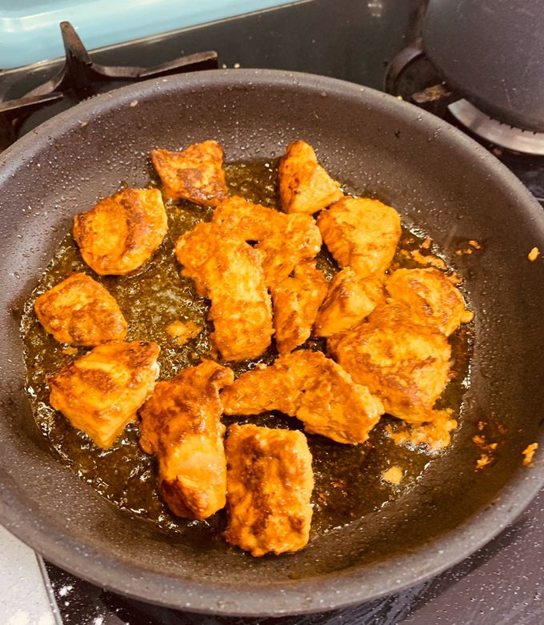
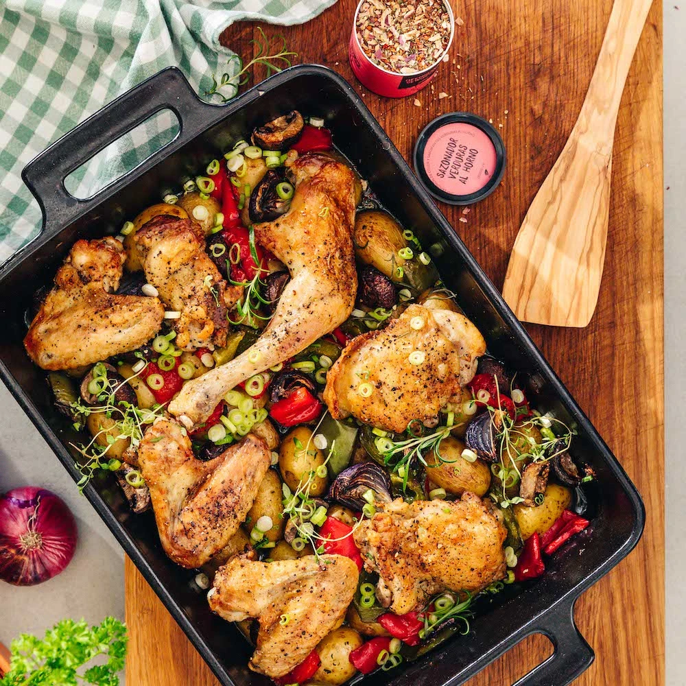
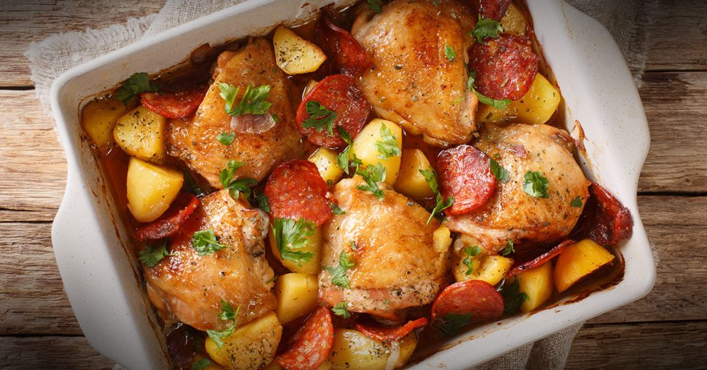

Tornar a la pàgina principal
Pollastre al forn amb verdures
Ingredients
- 2 pits de pollastre (aprox. 300 g)
- 200 g de verdures variades (carbassó, pastanaga, pebrot)
- 2 cullerades d'oli
- Sal, pebre i herbes
Pas a pas
- Marina el pollastre amb 2 cullerades d'oli i espècies durant 30 minuts.

- Col·loca el pollastre amb les verdures i cou al forn a 200°C durant 25-30 minuts.

- Deixa reposar 5 minuts abans de tallar i servir.
